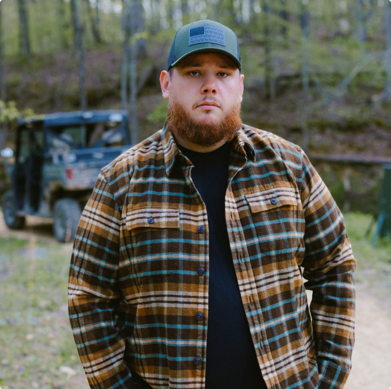
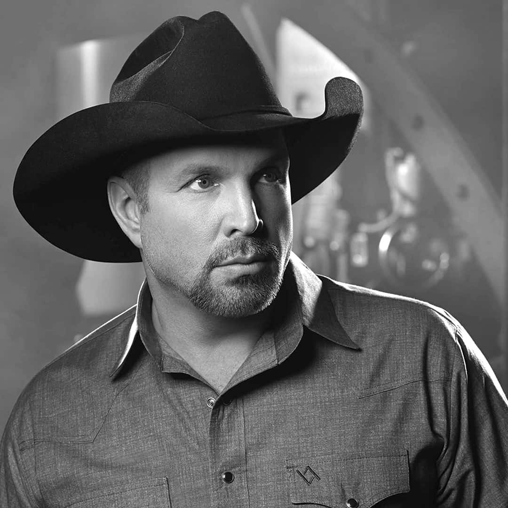

Our Featured Artists
-

Luke Combs
Genre: Country
Description: A talented country artist known for his powerful vocals and heartfelt lyrics.
Luke Albert Combs (born March 2, 1990) is an American country singer. He was born in North Carolina and grew up there, performing as a child. After leaving college to pursue a career in music, he moved to Nashville and released his debut EP, The Way She Rides, in 2014.
In 2017, Combs released his debut album, This One's for You, which reached number four on the Billboard 200. His second album, What You See Is What You Get, was released on November 8, 2019, and topped the charts in multiple territories, becoming his first to accomplish that. He has received three Grammy Award nominations, two iHeart Radio music awards, four Academy of Country Music Awards, and six Country Music Association Awards including the 2021 and 2022 Entertainer of the Year award, their highest honor.
-

Garth Brooks
Genre: Country
Description: A legendary country artist known for his energetic performances and record-breaking albums.
Troyal Garth Brooks (born February 7, 1962) is an American country singer and songwriter. His integration of pop and rock elements into the country genre has earned him his immense popularity, particularly in the United States, with success on the country music single and album charts, multi-platinum recordings and record-breaking live performances, while also crossing over into the mainstream pop arena.
-
Derek Ryan
Genre: Pop/Irish country
Derek Ryan, born in 1983 in Garry hill, County Carlow, is one of Ireland's leading country music artists. Coming from a musical family, he first made his mark as a member of the Irish boy band D-Side, achieving chart success in the UK, Ireland, and Japan. After the group disbanded, he returned to Ireland to pursue a solo career that blended traditional Irish music with modern country influences. His debut album *A Mother's Son* (2010) marked the start of a prolific songwriting journey, earning him recognition for heartfelt, authentic songs rooted in Irish storytelling and dance-hall energy.
Over the years, Ryan has released multiple hit albums. Today, Derek Ryan continues to tour internationally, standing out as a key figure in the modern "Country & Irish" scene for his sincerity, energy, and musical craftsmanship.
-

Dan McCabe
Genre: Country
Description: An emerging country artist known for his soulful voice and relatable songwriting.
Dan McCabe is an Irish country music singer-songwriter from County Cavan, Ireland. Known for his soulful voice and heartfelt lyrics, Dan has quickly risen to prominence in the country music scene. Coming from a long lineage of folk musicians Dan started out his career in live music at an early age. Dan would go from strength to strength in this side of the industry and music soon became his full time job.
Due to the Covid 19 lock down and lack of opportunity for live music performances, Dan turned his focus to posting videos on social media platforms merely as a bit of fun and to escape the hardship and gloom of the pandemic. Little did he know that these recordings would be viewed over 12 million times online and would catch the attention of Senior producers at RTE.